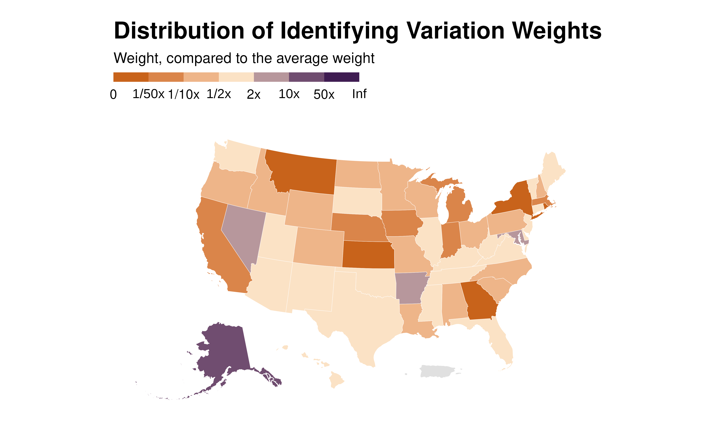

Plot a map of identifying variation weights
idid_viz_weights_map.RdDisplaying weights as fill color and scale for
each region, or nothing. If there are no overlapping polygons,
an error will occur, while if ... is supplied (see below) it will
be passed onto the subsequent geom_sf(), otherwise a warning will be raised.
Usage
idid_viz_weights_map(
reg,
var_interest,
shape_file,
join_by,
facet,
colors = c("#C25807", "#FBE2C5", "#300D49"),
...
)Arguments
- reg
A regression object.
- var_interest
A string. The name of the main variable of interest.
- shape_file
An
sfobject. The shape file to map the weights on.- join_by
A character string. The name of the variable in the original data and in
shape_fileand along which the matching should be performed.- facet
A character string. The name of the variable in the original data to facet the data graphs by.
- colors
A string vector of colors for the palette. I recommend to pass a vector of 3 distinct colors, with a lighter color in the middle, constituting a diverging scale. It allows a clear distinction between contributing and non contributing observations.
- ...
Additional elements to pass to the regression function when partialling out controls.
Examples
reg <- state.x77 |>
dplyr::as_tibble() |>
dplyr::mutate(NAME = rownames(state.x77)) |>
lm(formula = Illiteracy ~ Income + Population + `Life Exp` + Frost)
states_sf <- tigris::states(
cb = TRUE, resolution = "20m", year = 2024, progress_bar = FALSE) |>
tigris::shift_geometry()
idid_viz_weights_map(reg, "Income", states_sf, "NAME")
